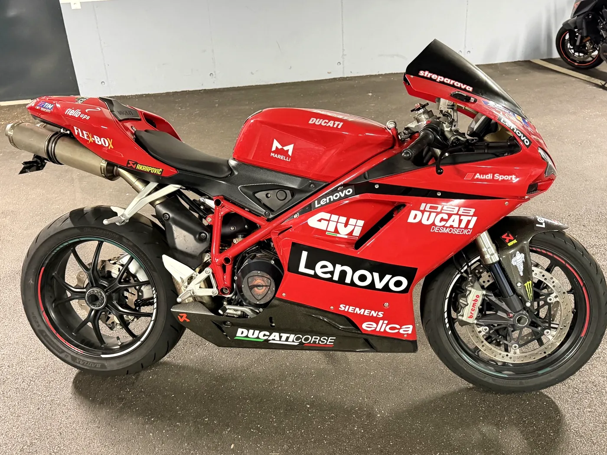

Trasporto moto professionale in Svizzera e dall'estero
Le moto sono molto piu di un mezzo di trasporto: per molti sono una passione, un investimento e un oggetto di grande valore emotivo. Proprio per questo, quando arriva il momento di trasportare una moto da un punto all'altro della Svizzera o dall'estero, e fondamentale affidarsi a chi sa come farlo nel modo giusto. TicinoTransport offre un servizio di trasporto moto dedicato, con procedure studiate per garantire la massima sicurezza del tuo veicolo a due ruote.
Che si tratti di una sportiva da pista, di una touring per i viaggi, di un'enduro da fuoristrada, di uno scooter cittadino o di una moto d'epoca da collezione, abbiamo l'esperienza e l'attrezzatura per trasportarla in sicurezza. Ogni moto viene fissata con cinghie professionali, protetta da urti e vibrazioni e trasportata con la stessa cura che riserveresti tu stesso.

Come leghiamo una moto
Una moto non si carica come un'auto. Va messa dritta, bloccata davanti e tenuta ferma su tutti e quattro i lati, altrimenti in frenata si muove e si rovina da sola. Per questo abbiamo un furgone attrezzato apposta: ferma-moto a pavimento, punti di ancoraggio e cinghie a cricchetto. Dentro la moto sta dritta da sola, al chiuso, e non la vede nessuno.
Poi vanno le cinghie, e lì conta dove le attacchi: se le metti nel punto sbagliato, in frenata la moto non si muove ma si rovina lo stesso.

- Telaio
- Supporti dei poggiapiedi
- Piastra inferiore della forcella
Sono le parti che reggono la trazione delle cinghie senza deformarsi.
- Manubrio, se la carena copre la piastra
- Maniglie del passeggero
La cinghia va tenuta il più vicino possibile agli steli: più si allontana, più il manubrio fa leva e rischia di piegarsi. Un manubrio da 22 mm è più delicato di un conico da 28.
- Frecce
- Manopole e leve
- Collettori di scarico
- Carene e plastiche
Si piegano, si crepano o si fondono. Una cinghia su una freccia costa più del trasporto.
Sotto ogni cinghia mettiamo una protezione, perché gli spigoli della moto tagliano il nastro e il nastro segna la vernice. E alle soste ricontrolliamo sempre: su un viaggio lungo le cinghie si allentano, è normale, basta ritenderle.
Trasporto moto da Italia a Svizzera
Il trasporto moto da Italia a Svizzera e uno dei servizi piu richiesti. Moltissimi motociclisti svizzeri acquistano moto in Italia, che si tratti di modelli nuovi presso concessionari italiani o di moto usate trovate su annunci online. L'Italia, patria di marchi leggendari come Ducati, Aprilia, Moto Guzzi e MV Agusta, offre spesso opportunita di acquisto interessanti che vale la pena cogliere.
Noi ci occupiamo di tutto: ritiriamo la moto all'indirizzo indicato in Italia, la trasportiamo in Svizzera e, se necessario, gestiamo anche le pratiche doganali di importazione, inclusi sdoganamento, IVA e immatricolazione svizzera. Un servizio chiavi in mano che ti permette di acquistare la moto dei tuoi sogni senza doverti preoccupare della logistica.
Non ci limitiamo all'Italia: trasportiamo moto anche da Germania, Francia e Austria, Paesi dove e possibile trovare modelli BMW, KTM, Triumph e molti altri a condizioni vantaggiose.
Come trasportiamo le moto
La sicurezza della moto durante il trasporto e la nostra priorita assoluta. Utilizziamo diverse soluzioni a seconda del tipo di moto, della distanza e delle esigenze del cliente:
Trasporto in furgone chiuso
Il trasporto in furgone chiuso e la soluzione piu sicura e protetta. La moto viaggia al riparo da intemperie, polvere e detriti stradali, esattamente come in un garage mobile. Utilizziamo bloccaruota professionali, cinghie di ancoraggio a cricchetto e protezioni per evitare qualsiasi movimento o contatto durante il viaggio. Questa soluzione e ideale per moto di valore, moto d'epoca e scooter.
Trasporto su carrello autoveicoli
Per i trasporti locali o per chi necessita di una soluzione piu rapida, utilizziamo il nostro carrello autoveicoli attrezzato per il trasporto moto. Il carrello offre una piattaforma stabile e sicura, con punti di ancoraggio dedicati e rampe di carico a bassa pendenza che facilitano le operazioni di carico e scarico.
Noleggio furgone per trasporto moto
Se preferisci trasportare la moto in autonomia, puoi optare per il noleggio di un furgone dalla nostra flotta. Il Citroen Jumpy L1H1, disponibile a CHF 80.-/giorno, e perfetto per trasportare una singola moto in sicurezza nel suo vano di carico da 5 metri cubi. Per chi deve spostare piu moto contemporaneamente, il Fiat Ducato L2H2 a CHF 120.-/giorno offre ben 13 metri cubi di spazio, sufficienti per 2-3 moto.
Visita la nostra pagina dedicata al noleggio furgoni per tutti i dettagli e per prenotare online. Il ritiro e la riconsegna avvengono presso la nostra sede a Bioggio.